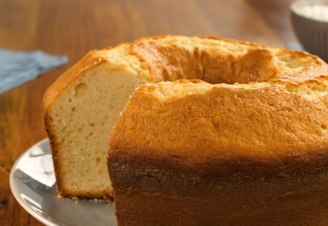

Bolo de Liquidificador

Ingredientes
2 xícaras de farinha
1 colher de sopa de fermento
1/2 xícara de açúcar
3 ovos
1/2 xícara de leite
Modo de Preparo
Preaqueça o forno a 180°C.
Em uma tigela, misture a farinha, o fermento e o açúcar.
Adicione os ovos e o leite, misture bem até obter uma massa homogênea.
Despeje a massa em uma forma untada.
Asse por 30 minutos ou até dourar.
Dica
Você pode adicionar raspas de limão para dar um sabor refrescante ao bolo.